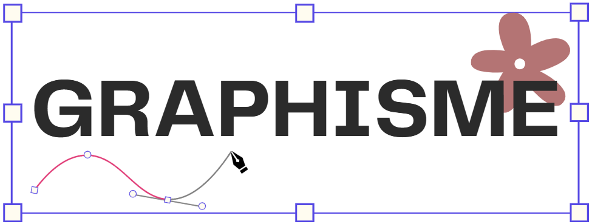
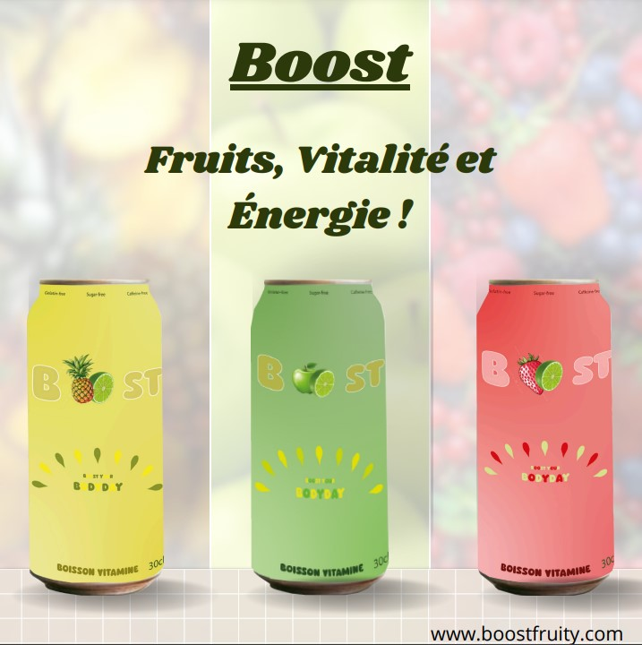
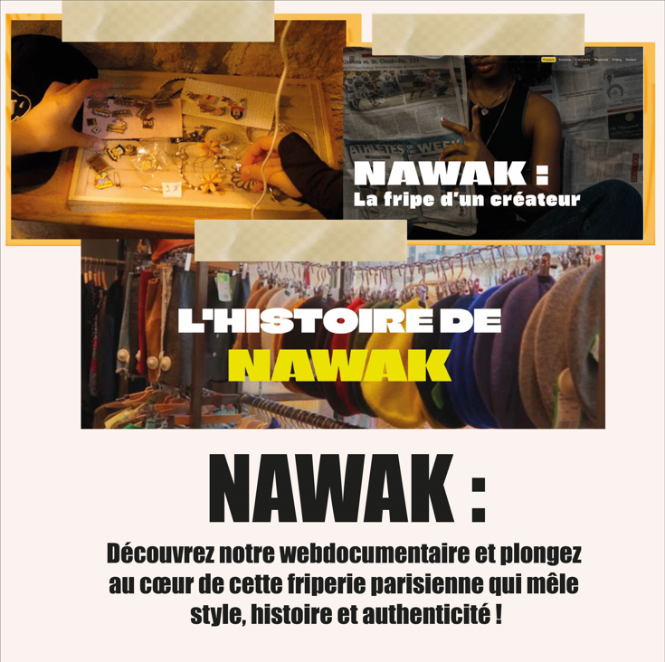
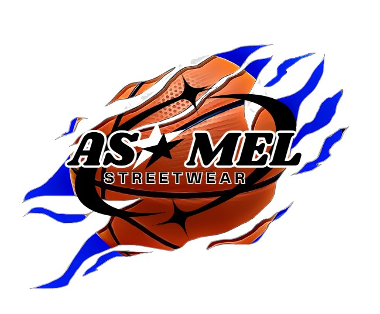
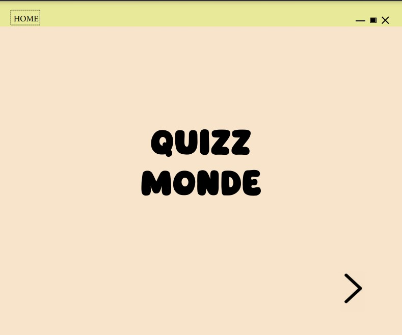

Le graphisme était un domaine que je ne connaissais pas en profondeur avant ma formation, bien que j'aie toujours eu une passion pour le dessin. J'ai découvert un tout nouvel aspect de la création visuelle en apprenant à utiliser des logiciels de design. Cette expérience m'a permis d’allier ma créativité naturelle à des outils numériques puissants. Même si au début je me suis sentie un peu perdue avec ces nouveaux outils, j'ai vite compris comment les utiliser pour exprimer mes idées de manière plus précise et professionnelle. Vous trouverez certains projets de graphisme que j'ai réalisés au cours de ma formation, où j'ai pu mettre en pratique cette nouvelle compétence.
Cliquez pour en savoir plus.
Cliquez pour en savoir plus.




×